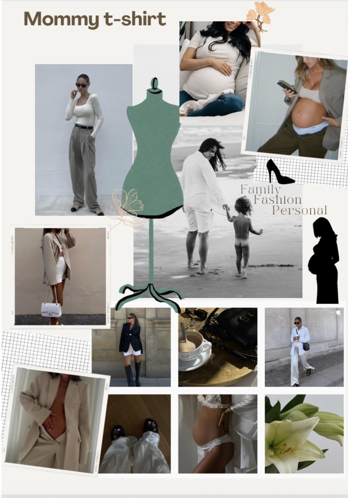

Portfolio - Nicoline Wedel
Tema 3 Grundlæggende UX


Skitse:

Prototype:
Moodboard:
Idé:
I starten af dette tema blev vi introduceret for metoden ”design-sprint”, som vi skulle udføre i løbet af opgaven til at skulle designe en selv-opfundnet t-shirt. Denne metode er helt essentiel for fremgangsmetoden og ens arbejdsevne i
processen. Vi fik forskellige metoder til at udføre vores reseach, som var – desk reseach, survey, interview, observation og reseach
For mit vedkommende fik jeg mest ud af survey metoden, da mit spørgeskema gav mig specifikke målgrupper og informationer fra potentielle målgrupper. Det er dog vigtigt at huske på at den er nyttig til hurtigt at indsamle
store mængder data, men det er vigtigt at overveje stikprøven og spørgsmålene nøje for at sikre, at resultaterne er nøjagtige og repræsentative.
Man kan se resultaterne fra mit spørgeskema ude i siden. Jeg kunne ud fra dem
hurtigt fornemme, at jeg skulle have fokus på at lave en t-shirt, som var bæredygtig, stilfuld, behagelig samt prisvenlig. Det gav mig hurtigt noget kvantitativ data, som giver mig en stærk ekstern validitet og generaliserbarhed, da jeg
kunne nå ud til en stor målgruppe. Derimod er der manglende mulighed for uddybelse, som kan gøre årsagssammenhængen svær at bestemme, eftersom det ikke bliver så nuanceret.
Det næste step var at lave en sketchfasen, som jeg
brugte til at idégenerere for så at komme frem til selve idéen og så kunne kickstarte den i min decision-fase – som er afgørende og relevant for det endelige produkt.
Endelig prototype (kun til forsiden)
Efter min research, idéproces, test og sketch kom jeg til den endelige prototype. Jeg havde fokus på at ramme den rigtige målgruppe, som var til gravide kvinder. Samtidig lå fokuseret også på at få designet en t-shirt, som kunne bruges
under hele graviditeten – uanset størrelsen. Det skal være designet til at strække, føles komfortabelt, være bæredygtigt, stilren og elegant.
Det bliver hurtigt meget praktisk og knapt så friskt og nytænkende, når det gælder ventetøj til gravide kvinder. Her ville jeg gerne bryde de traditionelle konventioner og afprøve noget mere elegant men samtidig behageligt, da
målgruppen potentielt vil få nydelse og gavn af produktet. Men for at kunne få et så godt produkt, som ønsket, så kræver det en gennemarbejdet forundersøgelse af sin målgruppe.
Pitch
I min pitch har jeg brugt pitch-strukturen, som består af de 3 forskellige steps:
UX-resarch
UX/UI-design
UX-test
Jeg startede min pitch med at fortælle om hvad jeg havde fundet frem til af nuværende data og information, så jeg kunne forklare for lytterne hvor nyttigt og brugbart min ide er og dermed fange deres opmærksomhed, ved at sælge varen i en perspektivering til det nuværende marked for t-shirts til gravide kvinder, og så vise hvilke fordele mit produkt har til den målgruppe. Her gennemgik jeg UX-research samt survey undersøgelsen og de vigtigste elementer derfra. Dette gjorde jeg for at finde frem til et målbart og eksekveret salg. Derefter talte jeg om forskellige designprocesser med UX/UI design, hvor jeg gav en gennemgang af min prototype for også at komme ind på brugen af copy og microcopy, som også spiller en vigtig rolle for selve brugeroplevelsen. Og til sidst en konklusion med fokus på fremtidsmulighederne efter min test.